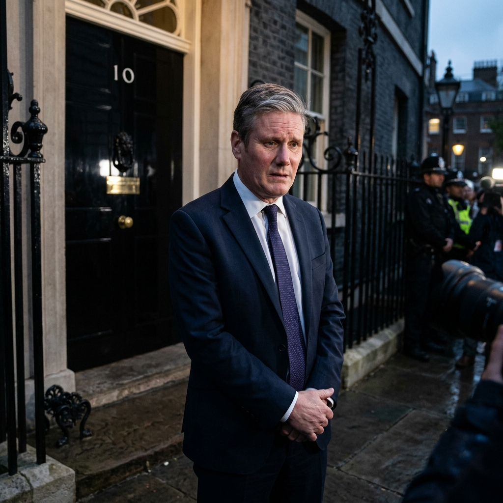

Keir Starmer enfrenta una grave crisis de gabinete tras derrotas electorales

El primer ministro británico, Keir Starmer, se encuentra en el momento más crítico de su mandato. Tras los resultados desalentadores en las recientes elecciones regionales, diversas facciones del Partido Laborista han comenzado a cuestionar su liderazgo.
Fuentes cercanas a Downing Street indican que al menos tres ministros clave estarían considerando su dimisión si no se produce un cambio de rumbo inmediato en la política económica del gobierno. "La situación es insostenible", comentó un analista político a la BBC.
A pesar de la presión, Starmer ha manifestado su intención de mantenerse en el cargo. En un breve comunicado, el primer ministro aseguró que una renuncia en este momento provocaría una "inestabilidad económica innecesaria" para el país en un contexto global ya complejo.
La oposición conservadora, por su parte, ha pedido el adelanto de las elecciones generales, argumentando que el actual gobierno ha perdido el mandato popular. Las próximas horas serán decisivas para el futuro político de Londres.